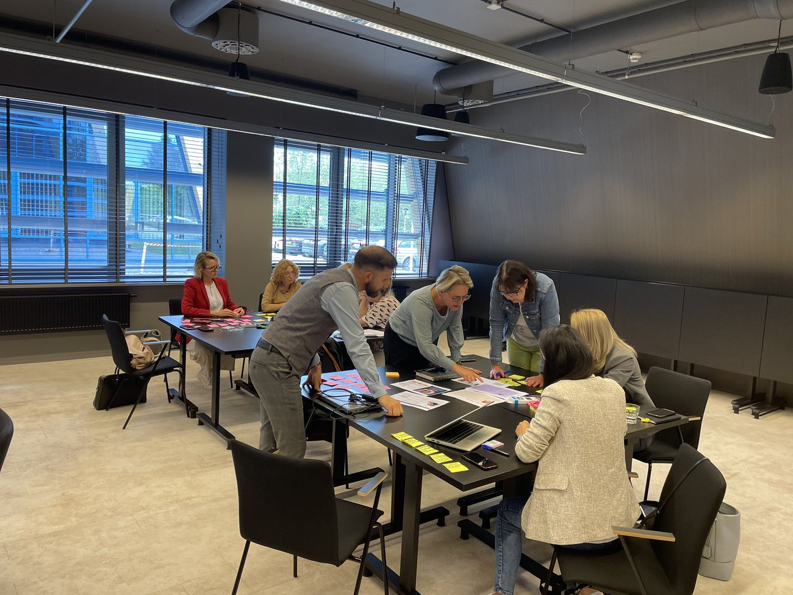

Insights
Wiedza, którą możesz wdrożyć
Artykuły, frameworki i case studies o UX research, projektowaniu produktów i strategii doświadczeń klienta.
Szybkość to nie zawsze dobry UX — historia platformy XTB
Jak przez nadmierną szybkość interfejsu straciłem kilka tysięcy złotych i czego to uczy o projektowaniu pod decyzje.

Demokratyzacja badań — kompletny poradnik UX
Jak rozłożyć badania na cały zespół, zachowując jakość i wiarygodność wniosków.
Jak zatrzymać klientów i sprawić, żeby chcieli wracać?
O tym, jak dbamy o EX-perience klientów i co realnie buduje ich lojalność.
UX w Lesie 2025: charytatywny plenerowy barcamp UX
Relacja z plenerowego barcampu UX w Polsce — społeczność, wiedza i dobra sprawa.

Od insightu do decyzji produktowej — bez przepaści
Jak projektować proces, w którym wnioski z badań nie giną między researchem a roadmapą.